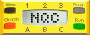

|  Overview | Misc. Features | Contents | Master Index |
| CyberMaster | RCX | RCX2 | Scout |
| Wait() | Make a task sleep for specified amount of time (in 100ths of a second). | ||||||
| StopAllTasks() | Stop all currently running tasks. | ||||||
| SetSleepTime() | Set the sleep timeout the requested number of minutes (which must be a constant). | ||||||
| SleepNow() | Force the device to go to sleep. | ||||||
| SetWatch() | Set the system watch to the specified number of hours and minutes. | ||||||
| SetRandomSeed() | Seed the random number generator with n. | ||||||
| SelectProgram() | Select the specified program and start running it. | ||||||
| SetScoutRules() | Set the various rules used by the scout in stand-alone mode. | ||||||
| SetScoutMode() | Put the scout into stand-alone (0) or power (1) mode. | ||||||
| SetEventFeedback() | Set which events should be accompanied by audio feedback. | ||||||
| SetLight() | Control the Scout's LED. | ||||||
| Drive() | Turns on both motors at the power levels specified. | ||||||
| OnWait() | Turns on the motors specified. | ||||||
| OnWaitDifferent() | Like OnWait(). | ||||||
| ClearTachoCounter() | Resets the tachometer for the motor(s) specified. |
VALUES / QUERIES
| Random() | Return a random number between 0 and n. | ||||||
| Program() | Number of the currently selected program. | ||||||
| Watch() | Return the value of the system clock in minutes. | ||||||
| BatteryLevel() | Return the battery level in millivolts. | ||||||
| FirmwareVersion() | Return the firmware version as an integer. | ||||||
| ScoutRules() | Return current setting for one of the rules. | ||||||
| EventFeedback() | Return the set of events that have audio feedback. | ||||||
| TachoCount() | Returns the current value of the tachometer for a specified motor. | ||||||
| TachoSpeed() | Returns the current speed of the tachometer for a specified motor. | ||||||
| ExternalMotorRunning() | This is actually a measure of the current being drawn by the motor. | ||||||
| AGC() | Return the current value of the automatic gain control on the RF receiver. |
| CyberMaster provides alternate names for the sensors: SENSOR_L, SENSOR_M, and SENSOR_R. It also provides alternate names for the outputs: OUT_L, OUT_R, OUT_X. Additionally, the two internal motors have tachometers, which measure 'clicks' and speed as the motors turn. There are about 50 clicks per revolution of the shaft. The tachometers can be used, for example, to create a robot which can detect if it has bumped into an object without using any external sensors. The tachometers have maximum values of 32767 and do not differentiate between directions. They will also count up if the shaft is turned by hand, including when no program is running. |
| FUNCTIONS / COMMANDS |
|
| Wait(time) | Overview | Top | ||||||
Make a task sleep for specified amount of time (in 100ths of a second). The time argument may be an expression or a constant: Wait(100); // wait 1 second | |||||||
| StopAllTasks() | Overview | Top | ||||||
Stop all currently running tasks. This will halt the program completely, so any code following this command will be ignored. StopAllTasks(); // stop the program | |||||||
| SetSleepTime(minutes) | Overview | Top | ||||||
Set the sleep timeout the requested number of minutes (which must be a constant). Specifying 0 minutes disables the sleep feature. SetSleepTime(5); // sleep after 5 minutes | |||||||
| SleepNow() | Overview | Top | ||||||
Force the device to go to sleep. Only works if the sleep time is non-zero. SleepNow(); // go to sleep | |||||||
| SetWatch(hours, minutes) | Overview | Top | ||||||
Set the system watch to the specified number of hours and minutes. Hours must be a constant between 0 and 23 inclusive. Minutes must be a constant between 0 and 59 inclusive. SetWatch(3, 15); // set watch to 3:15 | |||||||
| SetRandomSeed(n) | Overview | Top | ||||||
Seed the random number generator with n. N may be an expression. SetRandomSeed(x); // seed with value of x | |||||||
| SelectProgram(n) | Overview | Top | ||||||
Select the specified program and start running it. Note that programs are numbered 0-4 (not 1-5 as displayed on the LCD). SelectProgram(3); | |||||||
| SetScoutRules(motion, touch, light, time, fx) | Overview | Top | ||||||
Set the various rules used by the scout in stand-alone mode. | |||||||
| SetScoutMode(mode) | Overview | Top | ||||||
Put the scout into stand-alone (0) or power (1) mode. As a programming call it really only makes sense to put into stand-alone mode since it would already be in power mode to run an NQC program. | |||||||
| SetEventFeedback(events) | Overview | Top | ||||||
Set which events should be accompanied by audio feedback. SetEventFeedback(EVENT_1_PRESSED); | |||||||
| SetLight(mode) | Overview | Top | ||||||
Control the Scout's LED. Mode must be LIGHT_ON or LIGHT_OFF. SetLight(LIGHT_ON); // turn on LED | |||||||
| Drive(motor0, motor1) | Overview | Top | ||||||
Turns on both motors at the power levels specified. If a power level is negative, then the motor will run in reverse. Equivalent to this code: SetPower(OUT_L, abs(power0)); | |||||||
| OnWait(motors, n time) | Overview | Top | ||||||
Turns on the motors specified, all at the same power level then waits for the given time. The time is in 10ths of a second, with a maximum of 255 (or 25.5 seconds). Equivalent to this code: SetPower(motors, abs(power)); | |||||||
| OnWaitDifferent(motors, n0, n1, n2, time) | Overview | Top | ||||||
Like OnWait(), except different power levels can be given for each motor. | |||||||
| ClearTachoCounter(motors) | Overview | Top | ||||||
Resets the tachometer for the motor(s) specified. | |||||||
| VALUES / QUERIES |
|
| Random(n) | Overview | Top | ||||||||||||
Return a random number between 0 and n. N must be a constant. x = Random(10); | |||||||||||||
| Program() | Overview | Top | ||||||||||||
Number of the currently selected program. x = Program(); | |||||||||||||
| Watch() | Overview | Top | ||||||||||||
Return the value of the system clock in minutes. x = Watch(); | |||||||||||||
| BatteryLevel() | Overview | Top | ||||||||||||
Return the battery level in millivolts. x = BatteryLevel(); | |||||||||||||
| FirmwareVersion() | Overview | Top | ||||||||||||
Return the firmware version as an integer. For example, version 3.2.6 is 326. x = FirmwareVersion(); | |||||||||||||
| ScoutRules(n) | Overview | Top | ||||||||||||
Return current setting for one of the rules. N should be a constant between 0 and 4. x = ScoutRules(1); // get setting for rule #1 | |||||||||||||
| EventFeedback() | Overview | Top | ||||||||||||
Return the set of events that have audio feedback. x = EventFeedback(); | |||||||||||||
| TachoCount(n) | Overview | Top | ||||||||||||
Returns the current value of the tachometer for a specified motor. | |||||||||||||
| TachoSpeed(n) | Overview | Top | ||||||||||||
Returns the current speed of the tachometer for a specified motor. The speed is fairly constant for an unladen motor at any speed, with a maximum value of 90. (This will be lower as your batteries lose power!) The value drops as the load on the motor increases. A value of 0 indicates that the motor is stalled. | |||||||||||||
| ExternalMotorRunning() | Overview | Top | ||||||||||||
This is actually a measure of the current being drawn by the motor. The values returned tends to fluctuate slightly, but are, on average, as follows for an unladen motor:
| |||||||||||||
| AGC() | Overview | Top | ||||||||||||
Return the current value of the automatic gain control on the RF receiver. This can be used to give a very rough (and somewhat inaccurate) measure of the distance between the CyberMaster and the RF transmitter. x = AGC(); | |||||||||||||